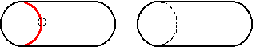

How to use the drawing tools
Solid Edge provides tools to help you draw quickly and precisely in a variety of situations.
- Coordinate Systems
-
You can draw sketches on the principal planes associated with the base coordinate system located in the center of the graphics window. For more information, see Working with coordinate systems.
- Reference Planes
-
A reference plane is a flat surface that is typically used for drawing 2D sketches in 3D space. Although the size of a reference plane is theoretically infinite, it is displayed at a fixed size to make it easier to select and visualize. For more information, see Working with reference planes.
- Layers
-
Layers and layer display settings help you group elements, which can make it easier to show and hide them and to keep track of different types of information. When you create 2D elements in Solid Edge, they are assigned to a layer when you are in a part sketch, an assembly layout sketch, a drawing sheet, or a drawing view.
- Grid
-
Grids help you draw with precision when the endpoints of elements you are drawing fit within regular intervals.
- IntelliSketch
-
IntelliSketch helps you create, and optionally maintain, geometric relationships between elements. As you draw, IntelliSketch recognizes the opportunity to relate new elements to existing elements and displays visual cues that help make elements connected, tangent, collinear, perpendicular, parallel, and so forth.
Based on your preference, Solid Edge will either maintain the relationships that IntelliSketch creates or only use IntelliSketch to create new elements with precision, without maintaining relationships as you add and change geometry.
- Projection Lines
-
Projection lines help you maintain alignment of key points, for example between related 2D Drawing Views of a model. Projection lines fulfill the function of the squares, triangles, and parallel rules used in classical drafting.
- Sketch Cleanup
-
Use the Clean Sketch command in the Draw group to remove redundant and unwanted elements from a sketch.
- FreeSketch
-
You can use the FreeSketch command
 to initiate a freehand drawing tool that draws lines, arcs, circles, and rectangles
by dragging the mouse. For example, as you press and hold the mouse button and drag
the cursor across the drawing sheet, a rough sketch of your design appears. When you
release the mouse button, the software recognizes the shapes in your sketch and turns
them into a precise drawing.
to initiate a freehand drawing tool that draws lines, arcs, circles, and rectangles
by dragging the mouse. For example, as you press and hold the mouse button and drag
the cursor across the drawing sheet, a rough sketch of your design appears. When you
release the mouse button, the software recognizes the shapes in your sketch and turns
them into a precise drawing.
To learn how, see Draw with FreeSketch.
-
You can use the Home tab→Edges group→Edge Painter command to change the line style of selected sketch elements to indicate a hidden or partially hidden part in a 2D view or sketch. For more information, see the Edge Painter command.
